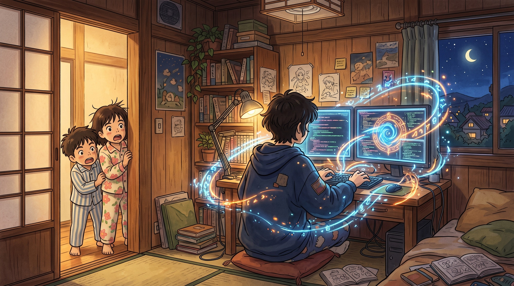
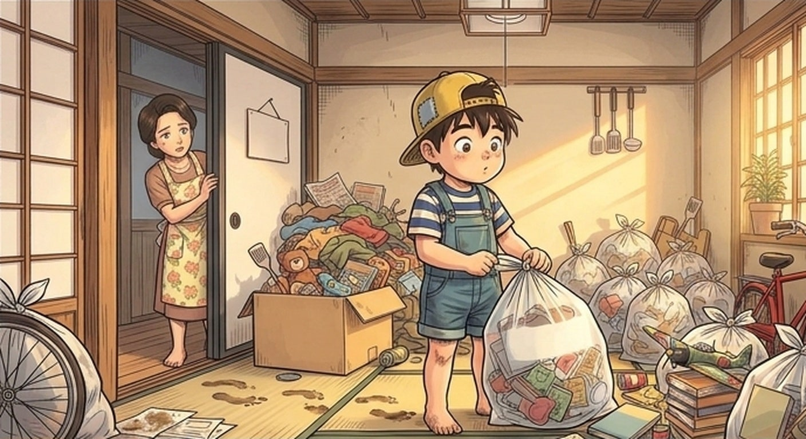
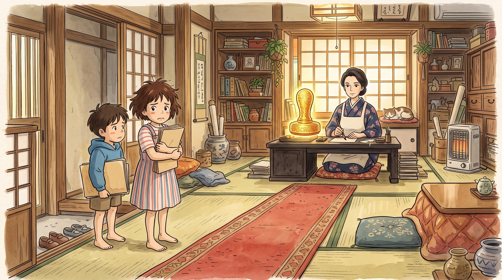
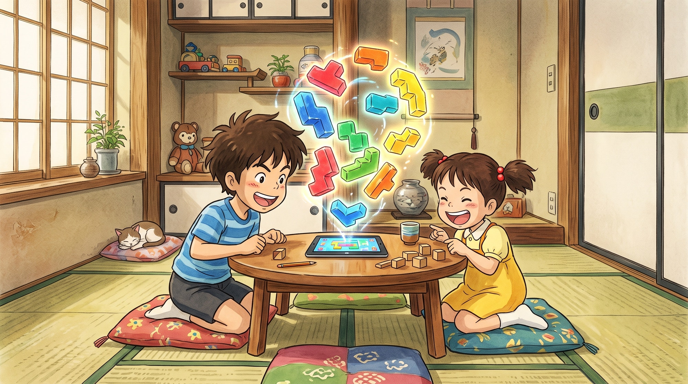

HOL12 特別ニュース
弟とAEMの意外な関係
ある日、弟が宣言した。「僕、今日からAEMになる」。家族は笑った。しかし1週間後、笑っていたのは弟の方だった——部屋はアセット管理され、宿題はワークフローで自動承認され、夕飯のメニューはパーソナライズされていたのだ。前代未聞のポジティブ爆笑ドキュメンタリー、開幕！

弟がAEMになって起きた3つの奇跡
「AEMになる」と宣言した弟の1週間。家族会議で“全会一致で笑顔”と承認された、奇跡の記録をどうぞ。
アセット管理

散らかった部屋が、一夜にしてDAMに。
弟は靴下にタグを付け、おもちゃにメタデータを入力し、不要なお菓子の袋をゴミ箱へ“アーカイブ”した。母が「漫画どこ？」と聞くと、弟は0.2秒で検索結果を返す。家族は彼を「歩くAssets」と呼び始めた。
- 靴下の片方行方不明率：0%に改善。
- おもちゃのタグ付け数：自己最多の248件。
- 弟のひとこと：「メタデータのない靴下は、存在しないのと同じ」。
ワークフロー

宿題、ついにワークフロー化される。
「作成 → 姉がレビュー → 父が承認 → 先生へ公開」。弟が机に貼り出した宿題ワークフローは完璧だった。ただし父が承認ボタン（ハンコ）を押し忘れ、宿題は3日間“承認待ち”に。それでも弟は前向きに「これも運用の学び！」と笑った。
- 宿題の提出率：過去最高の100%。
- ボトルネック：父。
- 改善策：父のハンコを冷蔵庫の横に常設。
パーソナライズ

家族一人ひとりに、最適な夕飯を。
タブレットで家族の好みを分析した弟は、夕飯メニューのパーソナライズを開始。父にはビール付き唐揚げ、姉にはヘルシーサラダ、祖母には特製煮物、そして自分にはハンバーグ3個。「セグメント別の最適化だよ」と語る弟の皿だけ、明らかに大盛りだった。
- 家族満足度：過去最高スコア。
- 母の作業量：なぜか3倍に。
- 結論：パーソナライズには、母へのリスペクトが必要。
エピローグ：弟、AEMを卒業する？
1週間後、弟は言った。「AEMは僕じゃなくて、みんなの笑顔を届ける仕組みだったんだ」。家族は拍手喝采。その夜、庭でお祝いのパーティーが開かれ、弟は皿洗い係に“アサイン”された。これもまた、立派なワークフローである。